The full arc, five chapters — Prologue through the Courtship, the War Years, the Travelling Years, and what the letters don't say — with maps, portraits, and illustrations woven into the prose throughout.
The Diamondstein Correspondence
Read the Story: Condensed Version
The maps, portraits, and illustrations sit inside the story, right where they're needed — instead of being pulled out into their own separate sections.
1
Prologue · Before the Letters
The story doesn't start with Sam and Dora. It starts with their grandparents' generation, in the small towns of the Latvian-Lithuanian , where a family named Diamondstein and a family named — Dora's side — were already intertwined by cousinage and geography long before anyone wrote a letter worth keeping.
Worth Knowing
The Pale of Settlement
The legal confinement and tightening restrictions that pushed an entire generation of shtetl families to leave.
Korsovka sat inside the Pale of Settlement — the region of the Russian Empire where Jewish residence was legally confined from 1791 onward, roughly the territory of modern Belarus, Lithuania, Latvia, Moldova, and parts of Ukraine and Poland. Villages like it were built around a synagogue, a marketplace, and a mix of trades and small commerce. Through the 1880s and 90s the Empire tightened the legal noose further: the May Laws of 1882 restricted new Jewish settlement even within the Pale itself, quotas capped Jewish enrollment in schools and universities, and conscription pressure on young Jewish men intensified. None of this is documented for this specific family — there's no letter describing it — but it's the ordinary, well-attested backdrop against which an entire generation of shtetl families, this one included, made the same calculation at roughly the same time: stay, or go.
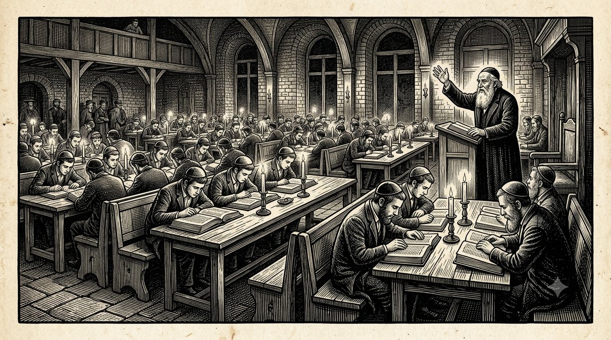
The academy at Keidan, where Dora's brother Yehuda-Leib was educated — the kind of institution that produced the family's own literate, biography-writing tradition.
Dora's father Reuven and mother Hinde raised their children in this world; her brother Yehuda-Leib became learned enough that his son later wrote a full biographical account of him, which is how we know anything about that side of the family beyond what Dora's own letters mention in passing.
Yehuda-Leib
Dora's brother · b. unknown – d. 27 Aug 1929
Tap for his story →
But this generation's defining fact is that it didn't stay put. David and Keila-Tsirel's ten children — the generation just above Sam and Dora — scattered out of the Pale in every direction available to a Jewish family at the turn of the century: to Montreal, to London, to South Africa, to Palestine.
Why this map matters hereOnce a family is this spread out, letters aren't a nicety — they're the only mechanism left for staying a family at all. Everything that follows in this archive exists because of this scattering.
Sam grew up in Korsovka, in this same world, the son of Getzel and (per family record, though not fully confirmed) Deborah Tomshinsky. He and Dora were cousins, and their families' paths ran close enough that by the time Sam was a teenager, marrying his cousin was already a plausible, half-expected future — if he ever came back from wherever he was about to go.
2
The Courtship · 1901–1911
In 1901, around eighteen to twenty-one, Sam left Korsovka alone for Montreal — overland to a Channel port, then steerage across the Atlantic on one of the running Europe to Canada. It's the single decision that starts the correspondence: from this point on, whatever happens between Sam and Dora happens , across an ocean, for the next decade.
Worth Knowing
How Emigration Actually Worked
The well-documented transit system Sam's 1901 crossing almost certainly rode on.
Sam's home region fed one of the best-documented transmigration systems of the era: the Wilson Line of Hull. By 1900, 45,548 Jewish transmigrants passed through the port of Hull alone in a single year — up from just 500 to 1,000 a year in the mid-1850s. From Hull, most travelled by a dedicated boat train straight through to Liverpool, then across the Atlantic by steamer — in effect a sealed corridor, where many people in Sam's exact position never really “entered” England at all in the sense of stopping to live there. Sam is first documented in Montreal on 11 June 1901, a plausible age and route for this exact system, though no ship manifest for his own crossing survives to confirm it.
Worth Knowing
Letters as “Instant Messages”
Why fast, reliable post — not telephones — made these letters feel more like texting than formal correspondence.
Home telephones were genuinely rare into the 1940s — the whole archive contains exactly one phone mention, and even that one is a borrowed line at an aunt's house. What made letters work instead was the post itself: early-1900s London had four deliveries a day, and the transatlantic Allan Line ran weekly, crossing Liverpool to Montreal in about five days. A letter posted in Montreal could get a reply within two to three weeks; a London letter could get one the same evening. Fast enough that these read less like slow, formal correspondence and more like today's back-and-forth texting — daily during the Montreal courtship, weekly clockwork during the seaside years.
Sam's crossing to Montreal, 1901 — alone, around eighteen to twenty-one, on an emigrant-line ship.
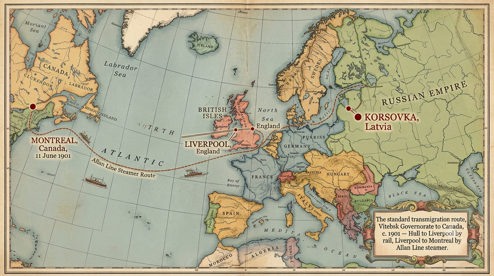
The routeKorsovka to a Channel port overland, then Atlantic crossing by Allan Line steamer to Montreal — the standard path for Jewish emigration from the Pale in this period.
Montreal did not go smoothly. Sam crossed back and forth more than once across this decade, cycling through jobs that didn't last — and in 1907 the wiped out whatever he'd managed to build, for the second time.
Worth Knowing
Why Moving to Canada Was Bad Timing
Sam arrived in Montreal just as a real financial panic gutted the casual-labor work he needed.
Sam landed in Montreal in 1901 chasing casual and fur-trade work — and arrived just in time for one of the worst stretches to be doing it. His own wages started around 25 cents a day, roughly an eighth of what U.S. workers were already demanding as a bare subsistence minimum in 1900. Then came the Panic of 1907, a real transatlantic financial crisis that threw Montreal's economy into its own contraction — Sam's own letters describe men thrown out of work “by the hundreds,” himself included. It's a big part of why, after nearly a decade of going back and forth, he finally gave up on Montreal for good in 1908.
The Panic of 1907 — the second time Montreal failed him.
The earliest letter in the whole archive, dated 11 June 1901, spells out exactly this kind of small, practical deception immigrants of the period sometimes had to make just to keep working: turned away for being a foreign Jew, Sam told the hiring office he was an Austrian Christian instead — and they believed him.
"So I said I was an Austrian Christian — and they took me." Sam's own words, 11 June 1901.
By 1908, Sam gave up on Canada for good and went to London instead. It's the decision that actually determines the rest of the story — made only after Montreal had already failed him twice, not as a first choice but as what was left.
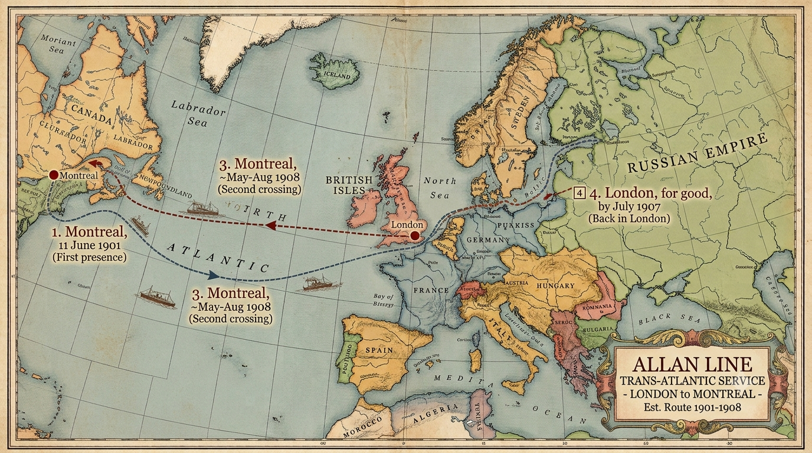
A decade of false startsTwo failed attempts in Montreal, each undone by forces outside Sam's control, before London becomes the answer — not the plan.
Sometime around February 1911, Sam and Dora married — who'd courted almost entirely by letter across an ocean for a decade. No photograph of the day survives. The marriage came with real money attached: Reuven's own signed obligated him to a fifty-pound dowry, quite possibly the first real capital Sam ever had, and five years later the seed money behind the fur business he was running by 1916.
Worth Knowing
Cousin Marriage Wasn't Unusual
Why Sam and Dora marrying as first cousins raised no eyebrows at the time.
Sam and Dora were first cousins — their fathers, Getzel and Reuven, were brothers. That's not an aside; it's a real structural fact of how this correspondence exists at all: cousin marriage was a common, unremarkable, religiously permitted practice in small, close-knit shtetl communities like Korsovka, often reinforcing family and property ties across a scattering diaspora rather than raising any concern. Sam and Dora were plausibly raised knowing each other from early childhood, and by the time the earliest surviving letters begin, courtship between them reads as an entirely ordinary, expected next step — not a complication the letters ever feel a need to explain.
Worth Knowing
The Tenaim: A Real Marriage Contract
The real, binding marriage contract behind the wedding — complete with a dowry and a penalty clause.
Underneath the courtship sits a document that survives in far better shape than any letter: the January 1908 tenaim, the traditional pre-wedding engagement contract, signed by both Reuven's side and Sam's. It confirms in writing what the family tree only implies — Reuven obligating himself to a fifty-pound dowry “before the wedding,” with a guarantor standing behind the promise.
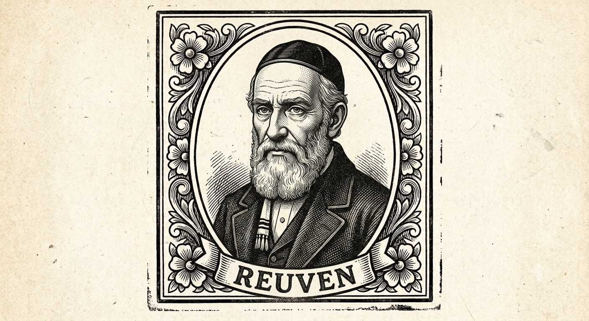
Reuven
Dora's father
Tap for his story →
3
The War Years · 1916
By September 1916, Sam and Dora are married with children, running , Fur Dealers and , out of — home at 34 Alvington Crescent, Dalston, the earliest address this archive can attest to. It's a short chapter by letter count, but a real hinge: the courtship-at-a-distance voice of the last chapter gives way here to the provider-from-a-distance voice that defines the next decade.
Worth Knowing
A Name That Kept Changing
How one family surname split into two different endings, in two different countries.
“Dimantshtein” — Yiddish for “diamond-stone” — is how the family tree itself spells the name; “Diamondstein” is the standing English form for decades, on Sam's 1916 business letterhead and still in use on a 1942 War Damage notice. That same week, a piano-shop invoice to the same household already reads “Mrs. Diamond” — the shortened form arriving alongside the fuller name. Sam himself carries it one step further later in life, signing as “S. DYMOND, Fur and Skin Merchant.” Meanwhile Dora's brother Yehuda-Leib's own son, emigrating to Palestine instead of England, adopted the surname “Yahalomi” — Hebrew for diamond, a direct translation rather than a softened spelling. Same root word, two branches, two different countries, two entirely different assimilations.
Glossary
Job Buyer
Part of Sam's own business title — a dealer who buys up job lots (bulk surplus or off-quality stock) rather than made-to-order goods.
Worth Knowing
The Anglo-Jewish East End
The real geography behind every address in these letters, and the family's own rise through it.
The addresses in these letters trace a real, well-documented migration pattern. Sam's business ran out of Fashion Street and Fournier Street in Brick Lane, with the family living at 34 Alvington Crescent, Dalston. Margate, Ramsgate, Westcliff, and Bournemouth — the seaside resorts Dora and the girls returned to summer after summer — had become close to a specifically Anglo-Jewish seaside circuit by this period.
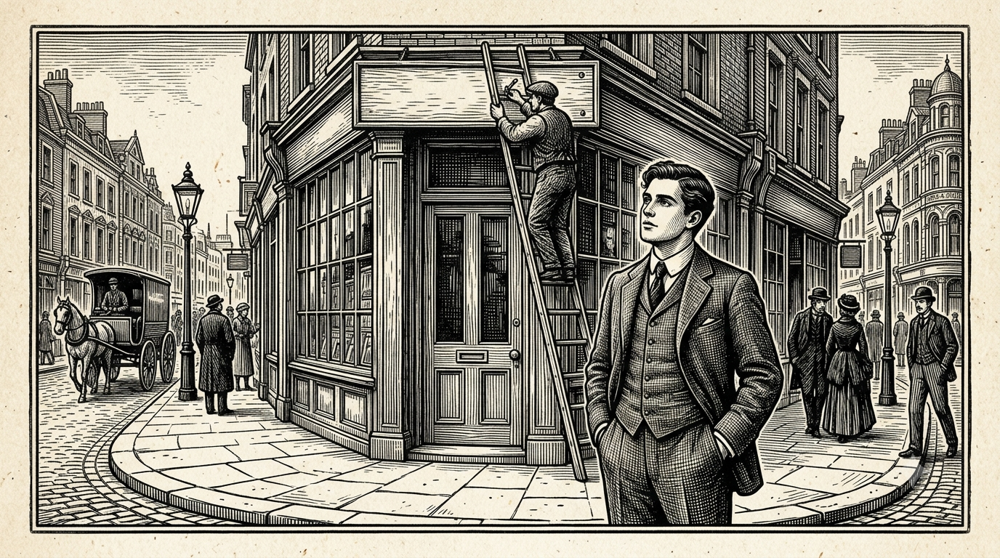
By 1916, the young man who'd once posed as an Austrian Christian just to get hired had his own name over a shop door in Brick Lane.
Once, history simply walks into an ordinary letter home. Sam mentions that he and his friend John watched — “it was a fine sight” — then returns to asking after the kiddies at the seaside, in the very same paragraph.
Worth Knowing
The Cuffley Zeppelin
The real WWI event Sam watched fall from a restaurant window with his friend John.
The airship Sam and John watched fall was SL11 — popularly called “the Cuffley Zeppelin,” though it was actually a Schütte-Lanz design, not a true Zeppelin-built craft. It came down over Cuffley, Hertfordshire, on the night of 2–3 September 1916, during the largest German airship raid on Britain to that point. Royal Flying Corps pilot Lieutenant William Leefe Robinson intercepted it and shot it down using new incendiary ammunition designed to ignite the airship's hydrogen — the first German airship destroyed over mainland Britain. It burned as it fell, visible across London, with crowds reportedly watching and cheering; all 16 crew died. Robinson was awarded the Victoria Cross almost immediately. Sam's letter is dated the very next morning — an independently-dated public event lining up almost to the hour with his own account.
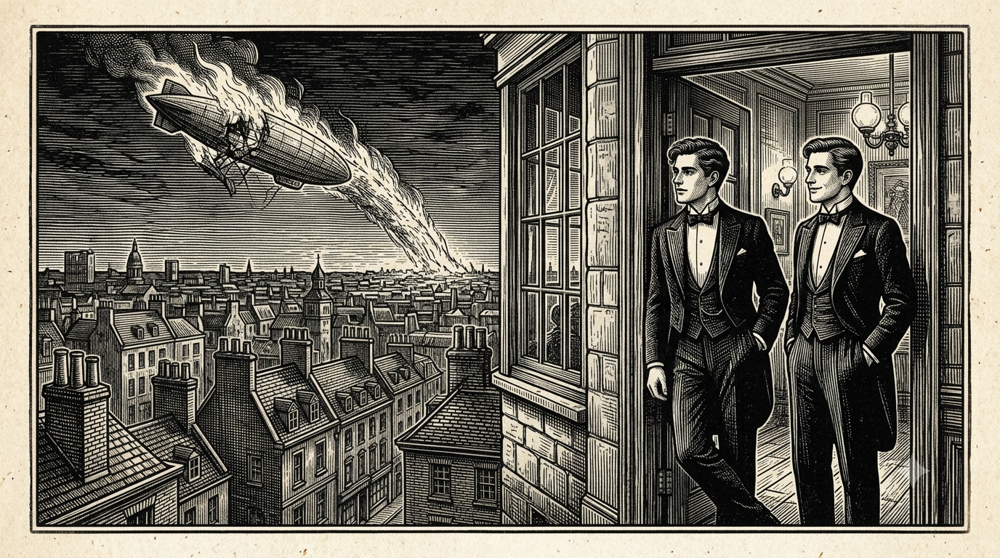
The Cuffley Zeppelin, mentioned in the same breath as the weather and the .
Glossary
Kiddies
Sam's constant, affectionate term for his and Dora's daughters throughout the letters.
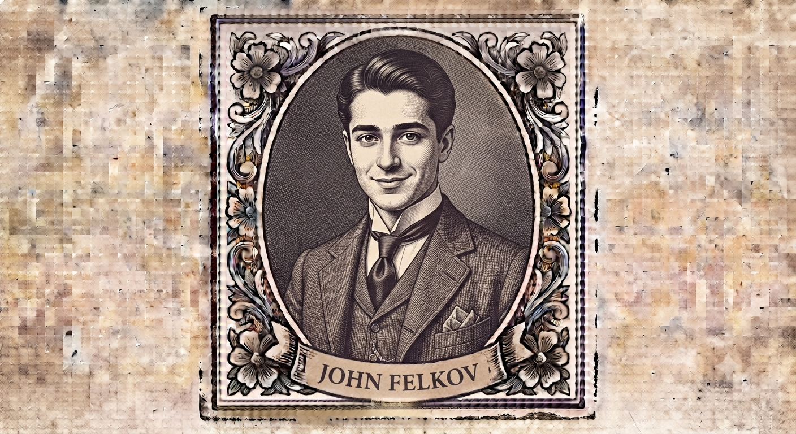
John Felkov
Alice's husband
Tap for his story →
4
The Travelling Years · 1919–1926
Dora and the girls for weeks at a stretch — Margate, Ramsgate, Westcliff, Bournemouth — while Sam works London and buys fur on the Continent. Every summer, Dora and the girls went to the coast for weeks at a time. Every summer, Sam stayed behind in London and wrote.
Worth Knowing
“Change of Air”: Why the Seaside Summers
The real Edwardian medical convention behind sending Dora and the girls to the coast every summer.
Every summer, Dora and the girls went to the coast for weeks at a time while Sam stayed in London and worked. This wasn't just family lore or a class marker — “change of air” was a real medical convention of the period: doctors routinely prescribed extended coastal or country stays for children and convalescents as general health practice, independent of any specific illness.
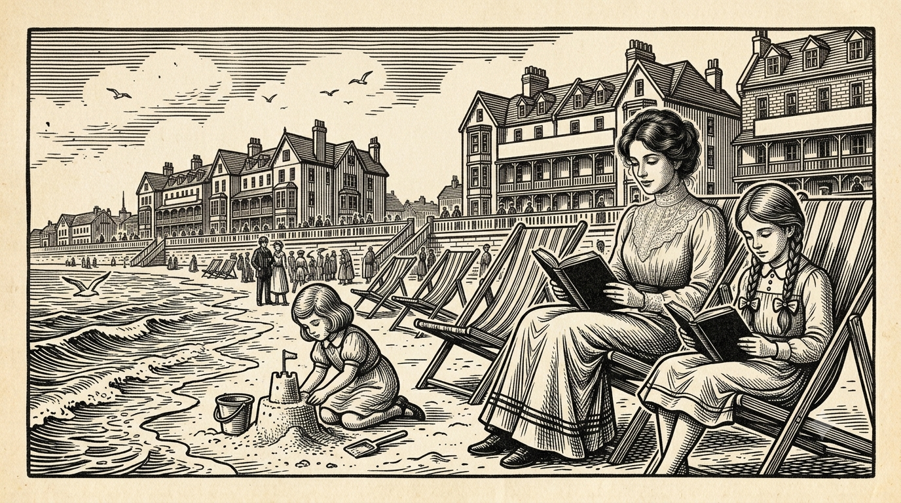
Margate. Ramsgate. Westcliff. Bournemouth. Weeks at a time, summer after summer.
Through these years, Sam's letters settle into a steady rhythm: a cheque folded into an envelope, then the same handful of questions about the children, the weather, whether they're behaving — asked and answered, week after week, for the better part of a decade.
The same handful of questions, asked and answered, for years.
The business, meanwhile, becomes genuinely wealthy. By the 1920s Sam is buying pelts by the thousand on — ninety stone martens and three thousand dyed moles in a single afternoon, at a steep markup over what he'd sell them for back home. The boy who once earned twenty-five cents a day in Montreal was, twenty years on, moving more money in an afternoon than most of Montreal ever paid him in a year.
Worth Knowing
The Fur Trade, London to the Continent
London was the shopfront — the real buying happened on regular trips to Paris, Leipzig, and Berlin.
By 1916 Sam was running S. Diamondstein & Co., Fur Dealers and Job Buyers, out of Fashion Street in London's Brick Lane — but London was the storefront, not the source. The actual buying happened on regular trips to Paris, Leipzig, and Berlin, where he'd purchase pelts by the thousand — stone martens, dyed moles — at a steep markup over what he'd sell them for back home; one single day's purchase of ninety martens and three thousand moles, at roughly three times cost, works out to something like sixty thousand Canadian dollars today. That's why so many letters from the 1919–1926 “Travelling Years” are written on Continental hotel stationery.
Ninety stone martens. Three thousand dyed moles. One day's purchase.
Not every trip was just business. In January 1923, Sam's sister Sonia was hospitalized for an operation in Leipzig while he happened to be there buying stock — one of the few moments in the archive where family and trade share the same page.
Sonia
Sam's sister
Tap for her story →
The daughters, meanwhile, grow into correspondents of their own. From a Bournemouth boarding house in December 1923, one of them writes home about a card game, needling her father for a promised five-pound note — one of the only letters in this whole archive written in a child's own voice, not Sam's.
“But you know Mummy — she kept arguing until they let her have them for one shilling and threepence each.”
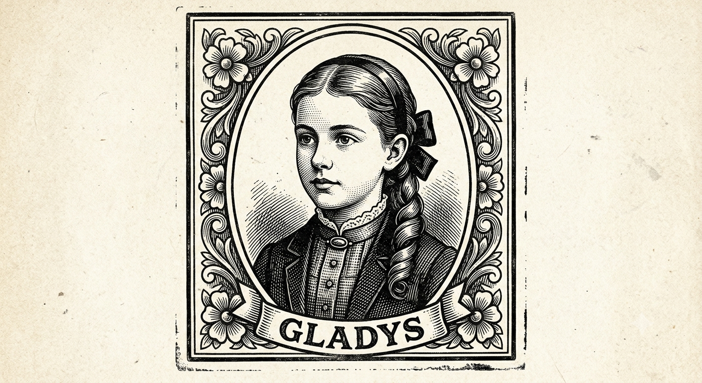
Gladys
Eldest daughter
Tap for her story →
Not every plan came off. In December 1924, Dora backed out of buying a house; Sam took it in stride — and, in the very same letter, swore the family to secrecy about his own goods purchases.
“Better luck next time.”
5
What the Letters Don't Say
Not every part of this story is in what the letters say. Some of the most telling moments here are in what they don't.
Of the letters in this archive, Sam is the confirmed author of at least 82. Not one is written by Dora herself. Her side of a decade of daily correspondence, and years more after that, simply doesn't survive — if it was ever kept at all.
Every seat at the table is full except Dora's own voice.
Twice, a dozen years apart, Sam learns how Dora is really doing only through someone else — her father Reuven during their courtship, her sister Sarah after they were married. In the whole surviving archive, her own feelings never once reach him directly.
“Father writes that you are very sad.”
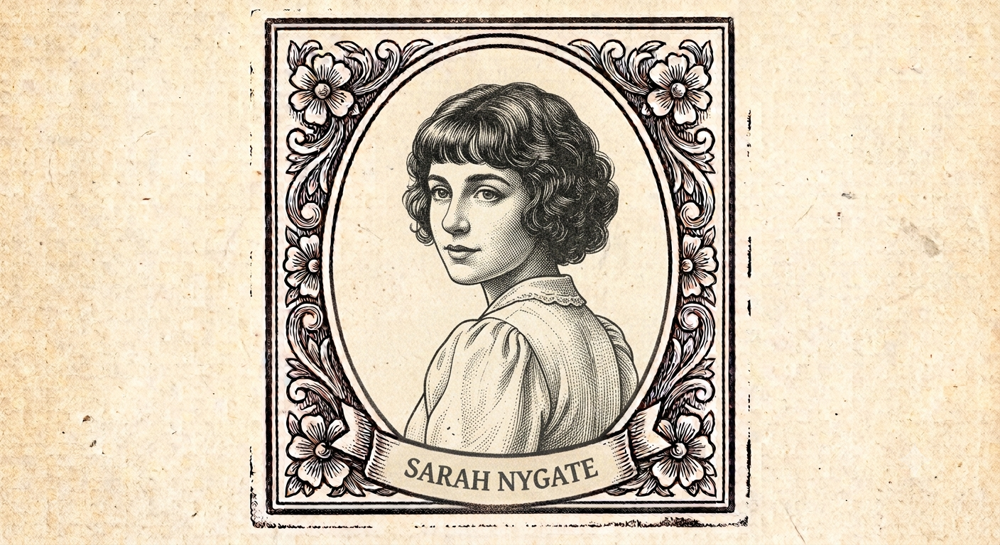
Sarah Nygate
Dora's sister
Tap for her story →
Nearly one letter in five that Sam wrote to Dora opens the same way: surprise, or hurt, that nothing arrived from her. The silence itself became its own kind of news between them.
A fifth of this entire archive is, in some part, about the act of correspondence itself.
From 1922 into the late 1930s, sixteen of Sam's letters home are written from Leipzig, Berlin, and Hanover — the exact years of the . Every one of them talks about hotels, prices, and missing home. Not one mentions politics at all.
Worth Knowing
The Weimar Years, in the Background
What “Weimar collapse and the Nazi rise to power” actually spans — and why the letters stay silent on it.
The sixteen letters Sam wrote from Leipzig, Berlin, and Hanover run from about 1922 into the late 1930s — spanning the Weimar Republic's currency collapse (hyperinflation peaked in 1923, when the mark became nearly worthless) through to the Nazi Party's rise to power in January 1933. It's a genuinely turbulent two decades of German history to be regularly doing business through. None of it appears in Sam's own letters home, which stay uniformly focused on hotels, prices, and missing his family.
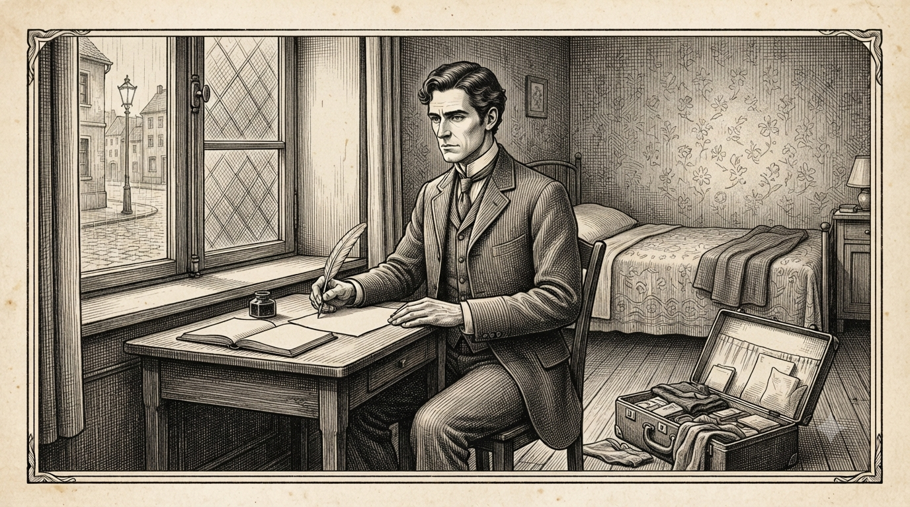
Sixteen letters from Germany, c.1922–the late 1930s — uniformly silent on what was coming.
Every dated item in this archive after 1926 is a bank cheque or an official notice, addressed to Sam or Dora by their bureaucratic names — never a letter in anyone's own hand. For twenty-five years, this archive let Sam speak for himself. For its last stretch, all that's left is what he owed and spent.
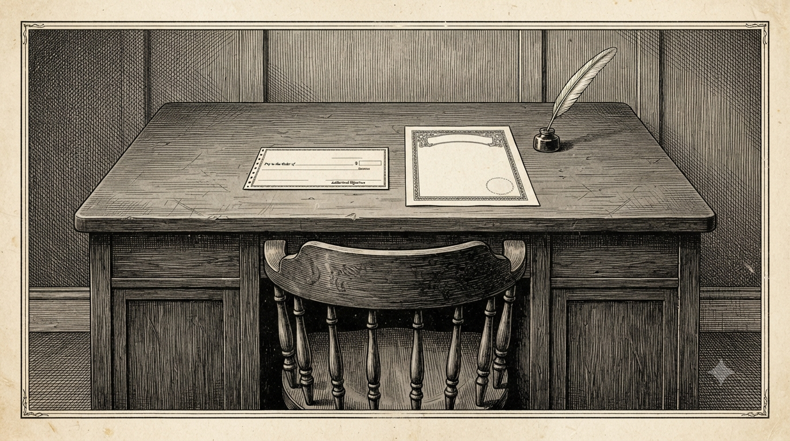
A cheque, not a voice — the archive's last twenty-five years.
That's the whole arc — Prologue through the Courtship, the War Years, the Travelling Years, and what the letters don't say. See Follow the Journey for all five maps with their full context, Every Letter for the full archive, or go back to the start.